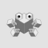

Subgraph OS
Operating Systems
An OS that is designed to be resistant to network-borne exploit and malware attacks.
An OS that is designed to be resistant to network-borne exploit and malware attacks.